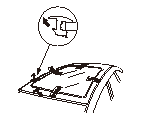
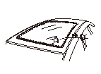
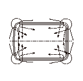
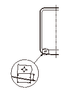
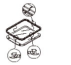
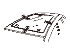
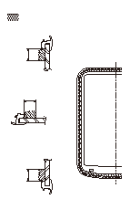
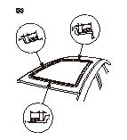
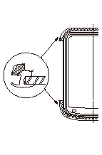
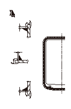

スカイルーフ ウインド ガラスの脱着
タイプ別装備
ピアノ線を使用する際は、保護メガネおよび手袋を着用して作業すること。
•
外気温が0°C以下となる場合は、作業をさけること。
•
降雨、降雪時は、屋外での作業をさけること。
•
シートに汚れや傷をつけないようにカバーをすること。
•
ボディおよび取外す部品に傷をつけないように作業すること。
次の部品を取外す。
•
スカイルーフ サンシェード フレーム
•
フロント ウインド ガラス モール
•
ルーフ モール
ルーフ ガラス モール（A）を引きはがして取外す。
冷間時および硬化したモールを取外す場合は、ドライヤなどで暖めながら作業を行う。また、固着している場合は、カッタ ナイフでカットする。
ガラス再使用の場合は、ボディとガラスに取付け時のための合わせマークを付ける。
ボディに傷つき防止用の布テープを貼る。

ガラスを次の手順で切離す。
5-1
室内側からガラス コーナ部が終わる箇所にピアノ線（A）を通し、両端に木片などを結ぶ。
5-2
室内側の木片を保持し、室外側の木片を引いてガラス（B）の直線部の接着剤（C）をカットする。
5-3
木片をピアノ線から外す。
5-4
室内側からガラス コーナ部にピアノ線を通し、両側に木片を結ぶ。
5-5
ピアノ線の両端を引いてガラス コーナ部の接着剤をカットする。
5-6
以上の作業を繰返し、ガラス全周の接着剤をカットする。
ボディやインテリア部品などにピアノ線が接触する箇所は、プラスチック板などで保護すること。
吸引ゴム盤を使用し、ガラスを取外す。
ボディに残ったダム ラバーを外す。
ボディに残った接着剤をナイフなどで削り、全周を平滑に約2mmの厚さに仕上げる。
ボディの塗装面を傷つけた場合は、アクリル ウレタン樹脂系2液型塗料で補修する。
ボディ側接着面をホワイト ガソリン、アルコールなどで清掃する。
清掃後、汚れ、油脂、水分などを付着させないこと。付着した場合は再度清掃すること。
ガラスの再使用の場合は、ガラスに残った接着剤およびダム ラバーをヘラなどで削り取る。
ガラス接着面およびモール接着部をホワイト ガソリン、アルコールなどで清掃する。
清掃したガラス面に直接手を触れないようにすること。油脂、水滴、汚れなどが付着した場合は再度清掃すること。

ピアノ線のかけ方

クリップ（A）をガラス（B）の合わせマーク（C）で位置決めして取付ける。
クリップを取付ける前に、ガラス側の接着面にプライマを塗布する。

ルーフ ガラス モール（A）のリヤ側ジョイント部（B）をガラス（C）の合わせマーク（D）で位置決めしてガラスに取付ける。
清掃したガラス面に直接手を触れないようにすること。油脂、水滴、汚れなどが付着した場合は再度清掃すること。

吸引ゴム盤を使用し、クリップ（A）とボディの穴位置を合わせてガラス（B）をボディに乗せ、接着面が全周で均一になる位置にし、ボディとガラスに合わせマーク（C）を付ける。
清掃したガラス面に直接手を触れないようにすること。油脂、水滴、汚れなどが付着した場合は再度清掃すること。
ガラス再使用の場合は、合わせマークの確認を行う。必要に応じて、位置を修正する。
吸引ゴム盤を使用し、ガラスを取外す。

ガラス プライマをルーフ ガラス モール（A）の内側のガラス（B）に塗布する。
•
ボディ プライマをガラスに使用しないこと。
•
ガラス プライマ塗布後30分以内に接着剤を塗布すること。
•
厚塗りしない。
•
カスレ、スケのないように塗布する。

ボディ プライマを塗布する。
•
ガラス プライマをボディに使用しないこと。
•
インストルメント パネル、インテリア部品に付着防止のカバーを取付けること。
•
厚塗りしない。
•
塗布後10分以上自然乾燥させる。

シリコン剤（信越化学工業KM860相当）をルーフ ガラス モール（A）の図の範囲に塗布する。

カートリッジのノズルの先端（A）を図のようにカットし、カートリッジをガンに取付ける。
接着剤（A）をルーフ ガラス モール（B）の内側のガラス（C）に塗布する。
接着剤塗布後5分以内にボディへセットすること。
各コーナ部は多めに塗布する。
吸引ゴム盤を使用し、ガラスとボディの合わせマーク位置を一致させてガラスをボディに取付ける。
以後の作業でドアの開閉を行う場合は、ドア ガラスを全開にして行う。
ガラス全周を軽く押して完全に密着させる。
ヘラなどで接着剤のはみ出しや不足を修正する。
ボディやガラスの汚れは、ホワイト ガソリン、アルコールなどでふき取る。
フロント ウインド ガラス モールを取付ける。
最低放置時間を目安に放置する。
水漏れテストを行う。
•
車を移動する場合は静かに行うこと。
•
ホースの先端を絞って水をかけないこと。
水漏れが生じた場合は、乾燥させた後指定のシール剤で水漏れ部分を補修する。
取外しておいた部品を取付ける。
ユーザに車を引渡す際、3日間程度は車に大きな振動を与えないよう注意すること。



 冷間時および硬化したモールを取外す場合は、ドライヤなどで暖めながら作業を行う。また、固着している場合は、カッタ ナイフでカットする。
冷間時および硬化したモールを取外す場合は、ドライヤなどで暖めながら作業を行う。また、固着している場合は、カッタ ナイフでカットする。